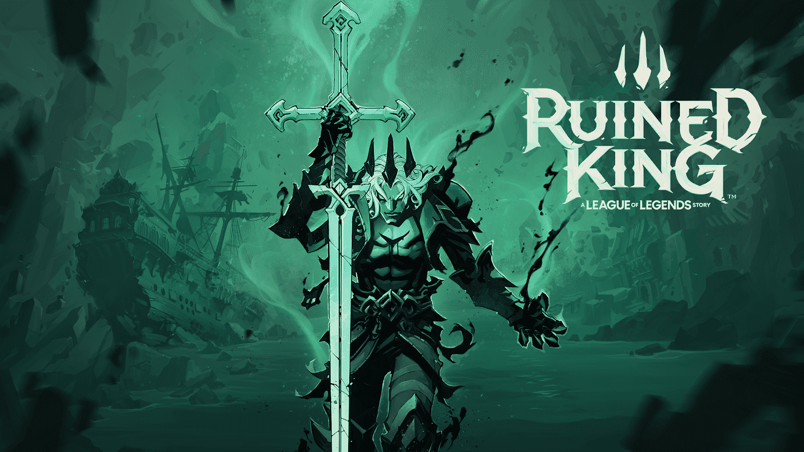

The release of Viego, The Ruined King
BY MATT JOHNSON, DECEMBER 4 2021
The Ruined King is one of the most legendary figures in League of Legends and he’s
finally heading into the game for the first time. On Friday, as part of its celebration of League’s 2021 season,
Riot released a teaser for the new champion. The video ends with Viego gaining even more power, and with Lucian
saying that he and Senna won’t be able to stop the Ruined King alone. While this is a bit of a cliff hanger,
according to Riot, Viego’s story is one that will be explored in many different League of Legends
stories and games throughout the year.
